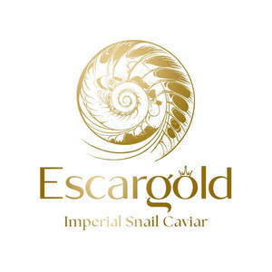

Trade Mark Journal No.2025/016 18 April 2025
UK00004182569 1 April 2025 (29,31,43)

- Class 29
- Non-living crustaceans; Fish, seafood and molluscs spreads; Non-living molluscs; Fish, seafood and molluscs, not live; Spiny lobsters; Crustaceans, not live; Fish jellies; Seafood jellies; Quenelles [fish]; Fish; Frozen shellfish; Fish croquettes; Crab; Tuna fish; Pickled fish; Spiny lobsters, not live; Lobsters (Spiny -), not live; Dishes of fish; Dried shrimps; Prepared insects and larvae; Mousses (Fish -); Fish mousses; Shelled prawns; Tuna fish [preserved]; Fish crackers; Seafood; Molluscs, not live; Processed fish roe; Mollusks, not live; Fish maw; Crab meat; Fish sausages; Artificial fish roes; Sea breams [red snappers, not live]; Sea breams [red snappers], not live; Sea trout roe for food; Fish-based foodstuffs; Tinned fish; Fish, tinned; Cooked snails; Edible oils derived from fish [other than cod liver oil]; Coconut shrimp; Edible seaweed; Crab roe for human consumption; Fish fillets; Fillets (Fish -); Processed fish; Salted jellyfish; Fish eggs for human consumption; Cooked fish; Edible ant larvae, prepared; Escamoles [edible ant larvae, prepared]; Escamoles being prepared edible ant larvae; Salted fish; Foods made from fish; Fish (Salted -); Fish cakes; Soft-shelled turtles [not live]; Preserved fish; Fish extracts; Prepared snails [escargot]; Fish, preserved; Foods prepared from fish; Edible insects, not live; Tinned seafood; Grilled fish fillets; Meat-based snack food; Fish-based snack food; Casseroles [food]; Vegetable-based snack food; Oils for food; Lard for food; Lard [for food]; Suet for food; Jellies for food; Agar-agar for food; Fruit-based snack food; Snack food (Fruit-based -); Animal fats for food; Tofu-based snack food; Animal marrow for food; Marrow (Animal -) for food; Vegetable fats for food; Animal oils for food.
- Class 31
- Crustaceans, live; Mollusks, live; Molluscs, live; Brine shrimp for fish food; Spiny lobsters, live; Lobsters (Spiny -), live; Foodstuffs for fish; Nutrients [foodstuffs] for fish; Foodstuffs for marine animals; Shrimps, live; Live shrimps; Shrimps, [live]; Edible insects, live; Crabs [live]; Live crabs; Crabs, live; Shellfish, live; Live shellfish; Soft-shelled turtles [live]; Soft-shelled turtles, live; Lobsters, live; Live lobsters; Sea breams [red snappers, live]; Live sea breams [red snappers]; Fish food; Food for fish; Food for aquarium fish; Edible aquatic animals [live]; Live edible aquatic animals; Arctic shellfish, live; Aquarium fish; Shrimp, live; Live shrimp; Live crayfish; Crayfish, live; Unprocessed edible seaweeds; Sea whelks, live; Snakehead fish, live; Foodstuffs for birds; Short-necked clams [live]; Live short-necked clams; Abalones [live]; Live abalones; Edible baits; Oysters, live; Live oysters; Live prawns; Prawns, live; Prawns [live]; Live aquatic creatures; Cuttlefish bones; Fish eggs for hatching; Live insects; Fish meal [animal feed]; Mussels, live; Krill, live; Fresh kelps.
- Class 43
- Food and drink catering; Catering of food and drink; Catering (Food and drink -); Catering of food and drinks; Preparation of food and drink; Preparation of food and beverages; Provision of food and drink in restaurants; Fast food restaurants; Food preparation; Take-away food and drink services; Providing food and drink; Providing of food and drink; Takeaway food and drink services; Serving food and drinks; Providing food and beverages; Provision of food and beverages; Provision of food and drink; Hospitality services [food and drink]; Food and drink catering for institutions; Providing food and drink in bistros; Take-away food services; Services for the preparation of food and drink; Food and drink preparation services; Decorating of food; Takeaway food services; Catering for the provision of food and drink; Food and drink catering for banquets; Providing food and drink for guests in restaurants; Take-away fast food services; Serving food and drink for guests in restaurants; Catering for the provision of food and beverages; Providing food and drink in doughnut shops.
Gabriel Liviu Slatineanu